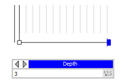
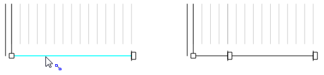

挤出长度与阶段
长度/深度
初始时，挤出视图会显示一条水平边，其左端有一个点，右端有一个点。这两个点的深度差定义了挤出的总长度。您可以单击任一点并按空格键来查看和编辑其深度。深度还可以在控制面板的“对象属性”控件组中编辑，或用鼠标拖动端点（右端）来编辑。
左侧的点是挤出的起点。其位置不能用鼠标改变，但可以编辑。如果改变其位置，其余所有点的深度都将以相同的量变化。

图 1：挤出深度
阶段
挤出可划分为多个阶段。激活点-边工具（ ）后，将鼠标指针移到某条边上，使该边以青色高亮显示。单击该边时，将添加一个新点，以标记挤出的一个阶段。
）后，将鼠标指针移到某条边上，使该边以青色高亮显示。单击该边时，将添加一个新点，以标记挤出的一个阶段。

图 2：添加阶段
激活选择工具（ ）后，您可以选择一个点并按空格键来查看和编辑该点的深度。或者，在未选择任何点的情况下，您可以输入新点的深度并按 Enter 键来创建该点。
）后，您可以选择一个点并按空格键来查看和编辑该点的深度。或者，在未选择任何点的情况下，您可以输入新点的深度并按 Enter 键来创建该点。
删除
位于左下角的起点不能删除。
标记中间阶段的点可以删除，只需将其选中并按 Delete 键。
如果存在可成为新端点的中间点，则端点可以删除。否则，端点不能删除。
| 这些内容对您有帮助吗？… 版权与免责声明 |
FLAC3D © 2019, Itasca | 原文更新于 2020 年 10 月 8 日 |